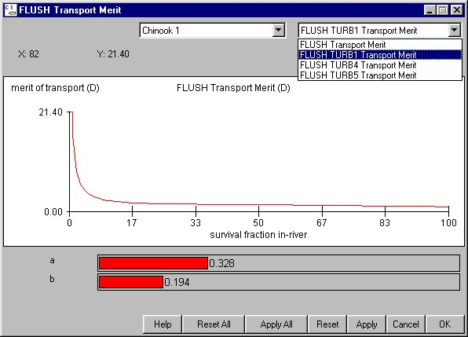

FLUSH Transport Merit Equation: FLUSH Model
Selecting Behavior FLUSH Transport Merit Equation opens a window for setting the parameters used in the Simple Mortality Model based on the FLUSH Model (see COMPASS in Context with Other Models). To use these parameter values during a run, select Simple Mortality for the Mortality Model in RunRuntime Settings. The Y-axis is the merit of transport value D and the X-axis is the percent survival. There are four choices for the FLUSH Transport Merit Equation--used in PATH for spring chinook (Marmorek 1996)--where:
FLUSH Transport Merit Equation opens a window for setting the parameters used in the Simple Mortality Model based on the FLUSH Model (see COMPASS in Context with Other Models). To use these parameter values during a run, select Simple Mortality for the Mortality Model in RunRuntime Settings. The Y-axis is the merit of transport value D and the X-axis is the percent survival. There are four choices for the FLUSH Transport Merit Equation--used in PATH for spring chinook (Marmorek 1996)--where:
- a: Constant known per species.
- b: Constant known per species.
- Vt: Direct survival of transported fish.
This is an Equation Input window.

FLUSH Transport Merit Equation window
Marmorek, D.R., et al. 1996. Plan for Analyzing and Testing Hypotheses (PATH): Final report on the retrospective analysis for fiscal year 1996. Compiled and edited by ESSA Technologies Ltd., Vancouver, B.C.